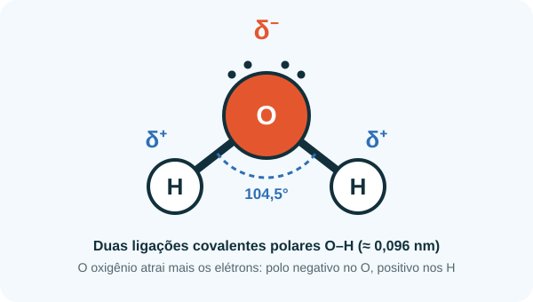
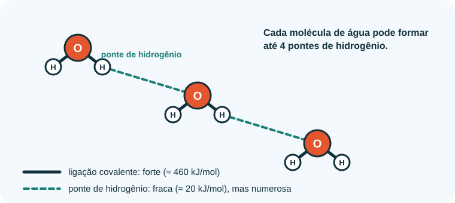
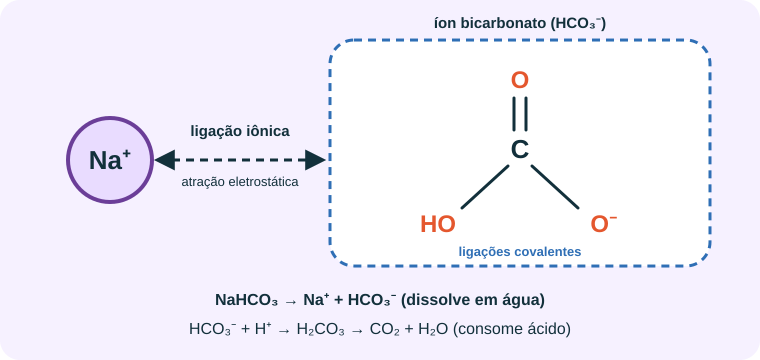
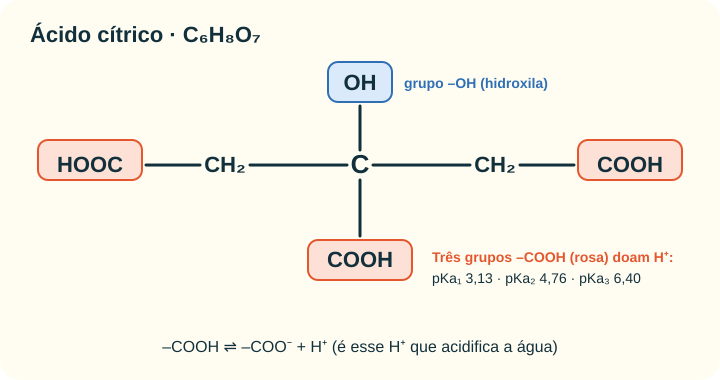

Início › Ligações químicas
As ligações químicas por trás do mito
Acidez, basicidade e pH nascem de como os átomos se ligam. Vamos olhar a água, o bicarbonato e o ácido cítrico de perto.
1. Ligação covalente: a molécula de água
Na água (H2O), o oxigênio compartilha pares de elétrons com dois átomos de hidrogênio. Esse compartilhamento é uma ligação covalente. Como o oxigênio atrai os elétrons com mais força que o hidrogênio, a ligação é polar: o oxigênio fica com carga parcial negativa (δ−) e os hidrogênios, com carga parcial positiva (δ+).

2. Pontes de hidrogênio
O H (δ+) de uma molécula de água é atraído pelo O (δ−) de outra. Essa atração é a ponte de hidrogênio: bem mais fraca que a ligação covalente, mas muito numerosa.

Essas pontes explicam por que a água tem ponto de ebulição alto, tensão superficial elevada, por que o gelo flutua e por que ela dissolve tão bem íons e moléculas polares — inclusive o ácido cítrico e o bicarbonato.
3. Ligação iônica: o bicarbonato de sódio
No bicarbonato de sódio (NaHCO3), o íon sódio (Na+) se une ao íon bicarbonato (HCO3−) por atração elétrica: uma ligação iônica. Dentro do bicarbonato, os átomos de C, O e H se mantêm por ligações covalentes.

Ao se dissolver, a água (com suas pontas δ+ e δ−) cerca cada íon e separa os dois. O HCO3− pode receber um H+ (neutralizando ácido) ou, em menor grau, tirar H+ da água e deixar OH− — daí o pH ≈ 8,3 da solução.
4. Ácido cítrico: ligações O–H que cedem H+
Em cada grupo –COOH do ácido cítrico, o hidrogênio está ligado a um oxigênio por uma ligação O–H polar. A água, também polar, consegue “puxar” esse H+ para si. O que sobra, o íon –COO−, é estabilizado porque a carga negativa se distribui entre os dois oxigênios (ressonância). É isso que torna o grupo carboxila um ácido.

5. A reação que faz espuma
Cada H+ do ácido cítrico reage com um HCO3−, formando ácido carbônico (H2CO3), que se decompõe em H2O e CO2. O gás escapa em bolhas. É a base dos comprimidos efervescentes.
6. Comparando as energias
| Tipo de interação | Exemplo | Energia aproximada |
|---|---|---|
| Covalente polar | O–H na água | ≈ 460 kJ/mol |
| Iônica (rede cristalina) | NaCl (energia reticular) | ≈ 790 kJ/mol |
| Ponte de hidrogênio | entre moléculas de água | ≈ 20 kJ/mol |
Ordens de grandeza para comparação didática: as grandezas medem processos diferentes (quebrar uma ligação, desfazer uma rede) e variam com o ambiente.
Nenhuma dessas ligações “reprograma” o sangue. O que muda o pH é a transferência de H+ entre moléculas, e o corpo conta com tampões e órgãos para corrigir qualquer desvio.